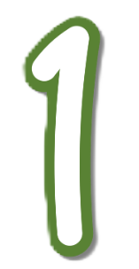

Von Wörtern zu Vektoren
Geh zurück zur Word Embedding Demo

Öffne das Vector analogy arithmetic"-Bedienfeld" am unteren Bildschirmrand. Bilde folgenden Satz:
„man is to woman as king is to ____" und klicke dann auf Submit für das Ergebnis der Vektorberechnung, das im Diagramm
als rosa Knoten angezeigt wird. Das dem rosa Knoten am nächsten bekannte Wort wird als grüner Knoten dargestellt und wird als Ergebnis ausgegeben.
Vervollständige den Lückentext!
Wähle jeweils die richtige Option aus!
Die Vektoranalogie „man is to woman as king is to ______“ ergibt als wahrscheinlichste Antwort das Wort
 , weil Word Embeddings
, weil Word Embeddings
 zwischen Wörtern erfassen. Diese Analogien funktionieren, weil die Vektoren im Raum so angeordnet sind, dass
zwischen Wörtern erfassen. Diese Analogien funktionieren, weil die Vektoren im Raum so angeordnet sind, dass
 zueinander ähnliche Abstände aufweisen. Dadurch können Sprachmodelle und KI-Systeme
zueinander ähnliche Abstände aufweisen. Dadurch können Sprachmodelle und KI-Systeme
 in Texten erkennen und verarbeiten.
in Texten erkennen und verarbeiten.